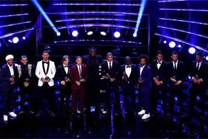
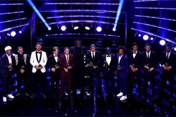

Fifa’s best award skandalen
Af Jannick
De mange års dominans af Messsi og Ronaldo i den gyldne bold blev brudt af den kroatiske vm-finalist og champions league vinder. Hverken Ronaldo eller Messi havde lyst til at dukke op til den prestigefyldte ceremoni. De havde nok på forhånd hørt om dagens udfald og var ikke enige i beslutningen, hvilket på trods af dårlig sportsmanship, var på sin plads.
De to tidligere holdkammerater Modric og Ronaldo havde begge været med til at vinde 3. champions league trofæ i træk for Real Madrid og havde derfor et stort forspring i løbet. Mål og assistforskellen er dog stor for de to trofævindere. Hvis man udelukkende kigger på tallene, virker Ronaldos 48 mål og 8 assist op imod Modrics 4 mål og 10 assist virker prisens udfald mærkelig. Særlig hvis man kigger på Real madrid mandskabet som er i krise og ikke har scoret et mål de sidste 4 kampe. Den eneste forskel i deres trup i forhold til sidste sæson er den målscorende portugiser nu har den stribede Juventus trøje på. Nederst på siden ses Ronaldos og Modrics tal sammenlignet for da de spillede sammen og nu hvor de er i forskellige klubber.
Messi og Ronaldo debatten
Om dette er gjort for at afslutte den evige diskussion om Messi og Ronaldo eller om det er på grund af Ronaldos skifte, er svært at sige. En ting det ikke kan være er at Modric havde en bedre sæson end Ronaldo. Hvis man kigger på det, er det lidt tilfældigt at det er det år Ronaldo og Messi har lige mange af denne pris er det år hvor de finder en ny, på trods af de to legender har fortsat deres tårnhøje niveau. Det er kun at håbe er retfærdighed bliver genfundet når balon d or ceremonien bliver afholdt til december.
Fifas Puskas
Generelt kan der være tale om at Fifas priser blev uddelt sjovt ved sidste ceremoni. Der var en række mål nomineret til årets mål som bekendt hedder Puskas. Vinderen blev dog uden sammenligning det grimmeste mål af den egyptiske Liverpool mand, Salah. Mange mente at Salah fortjente at være årets spiller, som Luka Modric vandt. Derfor virker det som om at Fifa har kompenseret Salah med denne titel, for målet alene fortjente intet. Hvis der skulle være uenighed, kan de nominerede mål ses her: https://www.fifa.com/the-best-fifa-football-awards/puskas-award/
Betydning for fodbold
Generelt var det en meget forvirrende ceremoni, som virker mest af alt som en popularitetskonkurrence frem for hvem der faktisk var bedst. Dette kunne blive meget demotiverende for de spillere som faktisk fortjente titlerne og måske sænke deres niveau. Herfra krydses der fingre for at der sker nogle udskiftninger på de vigtige pladser i Fifas bestyrelse. Ellers kunne man frygte at fodbold bliver for politisk og vigtige titler afgøres på forkerte grundlag.
Fifa Fifpro world11
Nederst på siden ses en video med hvad der var sket hvis nogle af de andre nominerede havde vundet. Men først skal de forkerte pladser på FIFAS world11 gennemgåes. Til ceremonien valgte FIFA de 11 bedste spillere, en på hver plads på banen. Halvdelen af pladserne på fifas bedste hold kan diskuteres.
- Vigtigst af alt har de ikke inkluderet Salah som var nomineret til den bedste spiller. (Hvordan er man en af de 3 bedste i verden men ikke en af de bedste 11?)
- Chelsea målmanden thiabout Courtois som endte nr 5 i ligaen
- De to andre chelsea spillere Kante og Hazard, som også blot endte nummer 5 i ligaen.
- PSG’s højreback Dani Alves som knapt nok spillede og døjede med skader.